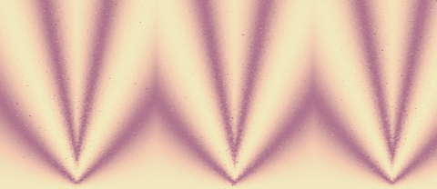
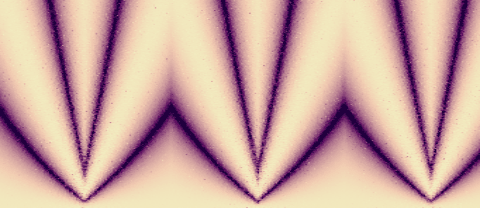
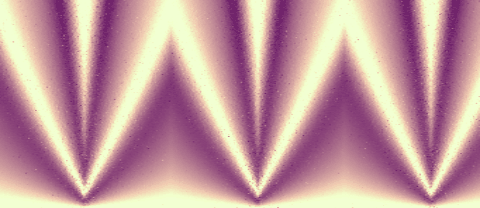

Effects
An effect is an add-on that changes the sound of whatever synth plays. One effect runs at a time, under every synth, before the EQ. You add it as you add a synth, pick it under OPTIONS, and turn its knobs. Eight are in the catalog: CHORUS, FLANGER, DELAY, TRIO, and the four below, which have clips you can play on this page.
- Add it
Open the page in Chrome or Edge, press Connect over USB, choose the Effects filter in the catalog and press Add to my FM-1 on the one you want. It takes a second, as an effect is only a few hundred bytes.
- Open OPTIONS
On the unit, hold HOME, then turn SELECT past the last synth to OPTIONS and go to the line EFFECT.
- Pick it
Press SEL to open the effect's page. SEL there picks the next effect in the dock, and after the last one, OFF. The page draws the effect's own values.
- Play and turn
KNOB1–4 turn its values, and every synth you play goes through it. The values and the choice are kept when you switch off.
With a cable and a computer
tools/dock.py deploy fxdrive.dock adds it and picks it at once. Remove on the card takes
an effect out, as it does a synth. The effect's room is its own, so a synth keeps all of its RAM.
If it says TOO SLOW
A heavy synth with a heavy effect can run the audio late. fm1-dock then drops the effect and the synth plays on. Pick a lighter effect, or a lighter synth setting. The table below says what each costs.
Good together
- DRIVE on a bass or an organ, with TONE down.
- PHASER on pads and electric pianos.
- CRUSH on drums and plucks, at 8 bits and RATE 2 to 4.
- TREMOLO on a guitar-like synth, at 4 Hz.
What each one costs
| Effect | Knobs | Add-on size | Time |
|---|---|---|---|
| DRIVE | DRIVE, TONE, LEVEL, MIX | 700 bytes | about 1.4 % of a block |
| PHASER | RATE, DEPTH, FEEDBACK, MIX | 916 bytes | about 3.4 % of a block |
| CRUSH | BITS, RATE, MIX | 608 bytes | about 0.6 % of a block |
| TREMOLO | RATE, DEPTH | 468 bytes | about 0.4 % of a block |
| CHORUS | RATE, DEPTH, MIX | 1 000 bytes | about 2 % |
| FLANGER | RATE, DEPTH, FEEDBACK, MIX | 1 024 bytes | about 2 % |
| DELAY | TIME, FEEDBACK, MIX | 828 bytes | about 1 % |
| TRIO | a chorus, a flanger or a delay | 1 856 bytes | 1 to 3 % |
A block is 256 frames, 5.8 ms. The times for the four new effects are the worst block over a bare sine, measured in the emulator; the older ones are from their catalog entries. They have been run in the emulator and on the computer, and not yet on a real FM-1 or SMK-37; the cards say so until someone has.
DRIVE
Overdrive and distortionLifts the sound into a smooth shaper that flattens the tops, then rounds off the highs and sets the level. A little warms and thickens; a lot is a fuzz.
| Knob | What it does |
|---|---|
| KNOB1 DRIVE | how hard the sound is pushed, 1× to 20× |
| KNOB2 TONE | how bright it stays after the shaper |
| KNOB3 LEVEL | the output level |
| KNOB4 MIX | how much clean sound stays |
The four clips are set to the same loudness, so you hear the tone and not the volume. The distortion clip has a far lower peak: flat tops carry loudness without height.
- Cleanno effect
The source: a plucked saw arpeggio, as a synth hands it to the effect.
- Crunch60 · 75 · 13 · 100
DRIVE 60, TONE 75: the pluck gets teeth and the decay stays loud.
- Overdrive70 · 65 · 12 · 100
DRIVE 70, TONE 65: thick and compressed, a guitar amp pushed.
- Fuzz100 · 95 · 10 · 100
DRIVE 100, TONE 95: all the way up and bright, a square-wave fuzz.
- Dark fuzz100 · 25 · 10 · 100
DRIVE 100, TONE 25: the same fuzz with the top cut off, a thick wall.
PHASER
Four moving notchesEach side goes through four all-pass filters whose corner a slow wave sweeps from about 0.4 to 5 kHz, the right a quarter turn behind the left. Mixed with the clean sound, they leave notches that travel through it.
| Knob | What it does |
|---|---|
| KNOB1 RATE | 0.05 to 5 Hz |
| KNOB2 DEPTH | how far the sweep travels |
| KNOB3 FEEDBACK | how sharp and ringing the notches are |
| KNOB4 MIX | how much is heard |

MIX 50
MIX 100
MIX 100, FEEDBACK 85Best on headphones: the two sides sweep out of step.
- Cleanno effect
A held chord with a slight left/right detune.
- Slow swirl20 · 100 · 40 · 100
RATE 20, DEPTH 100, FEEDBACK 40, MIX 100: a deep, slow sweep through the whole chord.
- Fast75 · 100 · 50 · 100
RATE 75, DEPTH 100, FEEDBACK 50, MIX 100: a quick warble.
- Jet30 · 100 · 90 · 100
RATE 30, DEPTH 100, FEEDBACK 90, MIX 100: narrow, ringing notches that whistle as they pass.
- Wide and slow8 · 100 · 70 · 100
RATE 8, DEPTH 100, FEEDBACK 70, MIX 100: a very slow sweep (12 s a cycle), so this 3-second clip catches only a part of it.
CRUSH
Bits and sample rateKeeps only the top bits of every sample and holds each value for a few samples: the sound of early samplers and game consoles. Silence stays silent.
| Knob | What it does |
|---|---|
| KNOB1 BITS | 2 to 16: how many bits are kept |
| KNOB2 RATE | 1 to 40: how many samples each value is held |
| KNOB3 MIX | how much clean sound stays |
- Cleanno effect
The same pluck, untouched.
- 7 bit, RATE 47 · 4 · 100
BITS 7, RATE 4 (11 kHz): grain on every note, and the highs fold into a metallic ring.
- 6 bit, RATE 66 · 6 · 100
BITS 6, RATE 6 (7.4 kHz): a sampler from the 80s, noisy and buzzy.
- 4 bit, RATE 104 · 10 · 100
BITS 4, RATE 10 (4.4 kHz): a handheld game console.
- 3 bit, RATE 203 · 20 · 100
BITS 3, RATE 20 (2.2 kHz): wrecked, the notes turn into stepped noise.
TREMOLO
A slow wave in the volumeMoves the level of both sides on a slow triangle. It is the small example in the developer’s guide, now a proper add-on.
| Knob | What it does |
|---|---|
| KNOB1 RATE | 0.1 to 10 Hz |
| KNOB2 DEPTH | how far the level drops |
- Cleanno effect
The same chord, untouched.
- Slow pulse15 · 100
RATE 15 (1.5 Hz), DEPTH 100: the chord swells and fades to nothing.
- Classic40 · 85
RATE 40 (4 Hz), DEPTH 85: an amp from the 60s.
- Fast75 · 100
RATE 75 (7.5 Hz), DEPTH 100: a fast shimmer.
- Chop100 · 100
RATE 100 (10 Hz), DEPTH 100: chopped into pulses.
Develop an effect
An effect is the smallest thing you can write for the dock: three functions and a list of up to four knobs. The
four above are 50 to 80 lines each. It is built, tested and shared like a synth, and the whole interface is
hb_fx_t in firmware/dock/hb_module.h.
1. Write it
modules/fxmine/module.cfg is three lines: name = MINE, version = 1,
kind = effect. The code is one file. The developer's guide has the smallest complete one, TREMOLO.
2. Build it
python3 tools/hbmod.py modules/fxmine makes build/modules/fxmine.dock and refuses
what would crash the chip.
3. Test the sound
The effect is plain integer C, so it also builds on your computer. tests/fx_dsp_test.py compiles the
four effects with tests/fx_host.c and feeds them sines, chords and noise. Copy its checks for yours.
4. Try it in the emulator
tools/dock.py emu --fwsc build/fm1-dock.fwsc --deploy build/modules/fxmine.dock plays it in the
emulated firmware and writes audio.wav. The log says effect on, and the render line says what it cost.
5. Put it on a unit
tools/dock.py info first, to see which unit is attached, then tools/dock.py deploy build/modules/fxmine.dock.
6. Share it
Add an entry with "kind": "effect" to docs/modules/modules.json and open a pull request. The
catalog guide has the rest.
What DRIVE's run() looks like
/* in place: n frames, L R interleaved, each sample within +-32767; in the audio interrupt, so integers only */ static void run(int32_t *lr, uint32_t n) { int32_t g = gain, a = lp, lv = level, w = wet, ch = 0; /* the knobs, read once: set() may interrupt */ uint32_t i; for (i = 0; i < 2 * n; i++, ch ^= 1) { int32_t x = lr[i], y = shape(x, g), o; /* lift, then 1.5 t - 0.5 t^3, flat at the ends */ z[ch] += (int32_t)(((int64_t)(y - z[ch]) * a) >> 16); /* TONE: a one-pole low-pass */ y = (int32_t)(((int64_t)z[ch] * lv) >> 16); /* LEVEL */ o = x + (int32_t)(((int64_t)(y - x) * w) >> 16); /* MIX: clean to shaped */ lr[i] = o > 32767 ? 32767 : o < -32767 ? -32767 : o; } }
Rules that cost us time
- Keep it integer. No floats, no 64-bit division, no libc. A 64-bit multiply is one instruction.
- Silence in, silence out. A rounding that floors leaves a small constant offset, and in a feedback loop it stays for ever. CRUSH did this with a quantiser that had no zero, and PHASER with a floored loop. Round to the nearest, and test it with a second of silence.
- MIX 0 should be the input, bit for bit. It is an easy check, and it catches a gain that is not quite one.
- Measure what it does, not only that it changes. PHASER once passed a “the spectrum moves” test with the wrong sign on its filter: the notch sat at 11 kHz, where nobody hears it. An impulse through the effect gives its response;
tests/fx_dsp_test.pynow checks that the notch is below 8 kHz. - set() can be interrupted by run(). Write each value as one word, or prepare a set and flag it last.
- Keep it light. Its time counts with the synth's, and a late block drops the effect (TOO SLOW).
- Hardware filters. The AC79's biquad unit could run all-pass or filter stages, but the dock's own EQ uses it and effects have no interface to it yet.
Examples: fxdrive, fxphaser, fxcrush, fxtremolo and the older fxchorus, fxflanger, fxdelay.